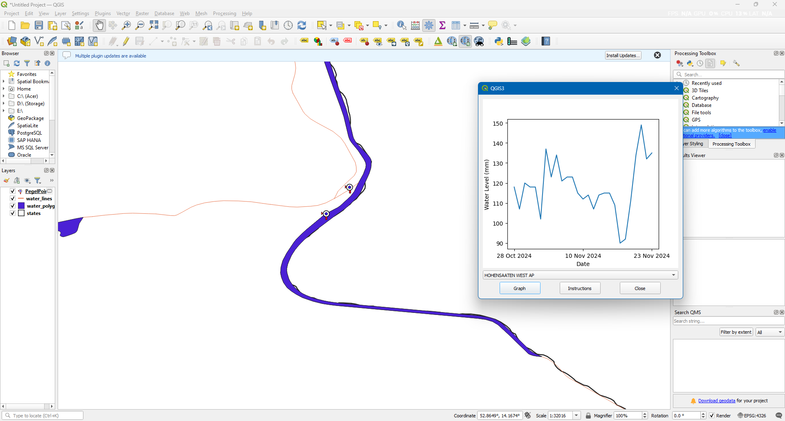
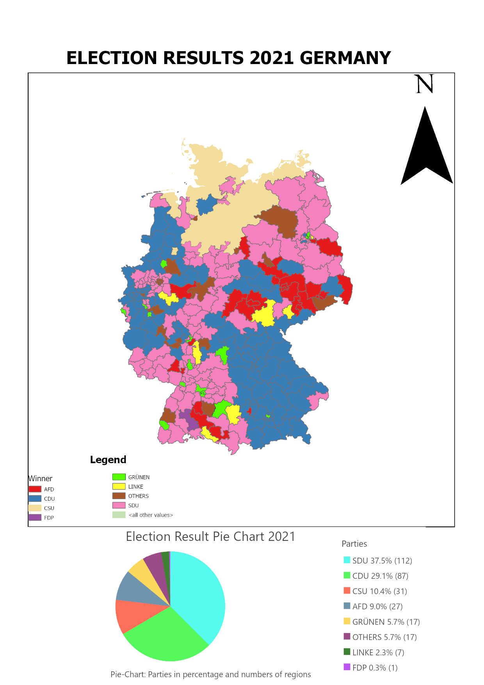
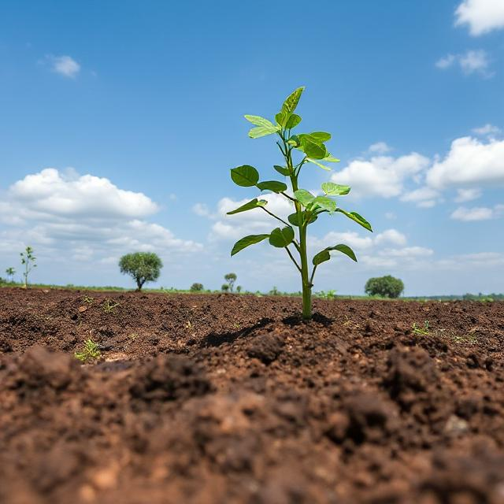

I created this plugin to monitor real-time water level across Germany using python. Basically, it displays time-series graphs of water level for selected water-bodies.
GitHub
This project showcases my ability to analyze and visualize complex data by creating a detailed map of the 2021 German federal election results using ArcGIS Pro. I utilized Python for data cleaning and modification, ensuring accuracy and consistency in the dataset. Through effective use of geographic information systems (GIS), I applied cartographic principles to design an intuitive map and accompanying pie chart, enhancing the interpretability of election outcomes.
GitHub
This project utilizes the Revised Universal Soil Loss Equation (RUSLE) to assess soil erosion risks in West Kenya. By analyzing key factors such as rainfall patterns, soil characteristics, topography, land cover, and conservation practices, the study estimates erosion rates and identifies vulnerable areas. The findings provide valuable insights for sustainable land management and erosion control strategies, helping to mitigate soil degradation and promote environmental conservation.
Website